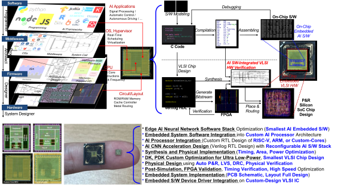
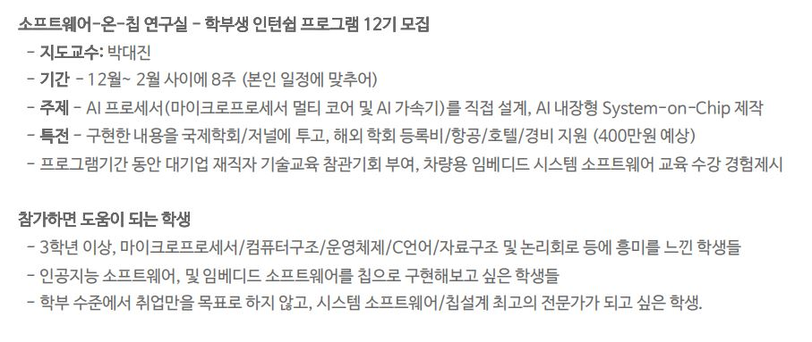

To be Prospective Our Members (Students or Visiting Researchers)
SW-Embedded S2oftware-on-Chip Expert Training Center
Our lab focuses on training highly in-depth expert VLSI chip designers, teaching the following all stages to realize the AI-stacked system-software-on-chip for various mission-critical embedded system design, especially capable of
Optimizing on-chip embedded AI software stack.
Designing tightly-coupled on-chip AI hardware accelerator.
Implementing full stack AI-Embedded system-software-on-chip integrated on CMOS silicon die.
|  |
{kind=link}
We choose some prospective candidates to be members in our team, then train them about the following technical topics. Graduate students will assist them to upgrade their technical skill, so that they can achieve successful results in our lab. During the training courses, we evaluate their capability and attitude to be our members, one candidate may be selected as our member. Our policy is only to select one per year.
{kind=link}
Intensive Training Courses
To be members with our Lab, we recommend to participate special intensive training camp with the following:
1:1 Internship Camp
March-June or Sept-Dec, 4 months, 1 time per week
Adviser-Student 1:1 Internship Course
Exploring Interest Topics
Summer Coding Camp
2 weeks intensive course on July
Pre-course to be member in our Lab
Winter Coding Camp
intensive course on Jan.
Pre-course to be member in our Lab
|  |
Individual Undergraduate Student Internship Members
All prospective candidates are evaluated for their research activities during 2 months. No. 1 excellent student will only enter the next stage of our training courses. The acceptance ratio is only under 10% (10:1), very competitive.
2024.09 2025.02
Undergraduate Student Research Internship (16th)
Hoseung Kim - AI Accelerator with High Performance Cores
Janghun Lee - Embedded Software Partial Update of Shared Library
2024.08
Undergraduate Student Research Internship (15th)
Youngwon Jeon - Interoperation of Verilog and Vehicle Simulators
Suhyun Kim - Digital Logic Design (Fundamentals), Validation
Hoseung Kim - AI Accelerator with High Performance Cores
Chihun Hwang - Robust On-Chip Bus Protection
2024.07
Undergraduate Student Research Internship (14th)
Youngwon Jeon - Image Data Processing using C, Verilog (Pre, Post)
Suhyun Kim - Digital Logic Design (Fundamentals), Validation
Seunghun Choi - I/F FSM Controller
Hoseung Kim - FIFO, Buffering
Chihun Hwang - SERDES Logic Design for High Speed I/F
2024.03-2024.06
Undergraduate Student Research Internship (13th)
Gihyun Jeon - Memory Access Patterns-Aware Scratch Pad Memory Optimization
Hyunjung Lee - RP4CameraWaverover-based Automotive Control
Youngwon Jeon - Quest-based VR + Leap Motion Cooperative Metaverse
Jaehun Kim - Automatic YOLOv8 Weapon Aiming Systems
2023.12-2024.02
Undergraduate Student Research Internship (12th)
Hyunjung Lee - RP4CameraWaverover-based Automotive Control
Mingyu Jang - SIMD Accelerator for AI-based Pipelined Processors
Youngwon Jeon - Quest-based VR + Leap Motion Cooperative Metaverse
Minjung Kim - Lazy Evaluation-based Energy Efficient Task Scheduling
Gihyun Jeon - Memory Access Patterns-Aware Scratch Pad Memory Optimization
2023.07-2022.12
Undergraduate Student Research Internship (11th)
Minjung Kim - Context Switching Overhead Reduction using Pre-estimated Compression for Ultra Lightweighted Embedded Systems
Gihyun Jeon - Verilog-C-Matlab Interoperable Simulation for Ternary ADC
Yujeong Son - Low-Power Processors with Instruction Compression Unit for Reducing Code Memory
2022.01-2022.08
Undergraduate Student Research Internship (10th)
Seunghyun Park - MIPS Processor with Parallel Accelerator for Fast LiDAR Signal Processing
Hyejoo Kim - VR-based Interoperation of Heterogeneous-Things Models
2021.11-2021.12
Undergraduate Student Research Internship (9th)
Soeun Park - Bus Track Optimization and Decision Platform
Juyeon Park - MIPS Processor with MAC (Multiply and Accumulation) Instructions
Daeheun Yun - MediaPipe-based Finger Displacement Detection
Seunghyun Park - MIPS Processor with Parallel Accelerator for Fast LiDAR Signal Processing
2021.9-2021.12
Undergraduate Student Research Internship (8th)
Mingi Cho - Lightweight OS-like Layer for Virtualization of Multi Processes Execution
2021.9-2021.10
Multidisciplinary Collaboration (7th)
Hyejoo Kim - SoundAPI Implementation for Voice-Triggered On-Demand Services
Jimin Kwon - Python-based Big Data Analysis and Visualization
Junseo Jang - Event-Driven Activity Recognition by Learning Event-Time Relationship
Dogeun Kim - Processing-based Real World Principle Visualization
2021.7-2021.8
Undergraduate students are exploring the AI-Embedded System-Software platform. (6th)
Hyodong Kim - Class-D Amplifier Circuit Design for Active Noise Canceller
Youngjun Song - Jetson-based AI Applications Implementation
2021.7-2022-08
Remnant AI-Related Special Session (5th)
Hyejoo Kim (KNU)
Jimin Kwon (B.S. Univ.)
Seungjin Kim (K.I. Univ.)
Shinyoung Lee (D.G. Univ.)
Heeyoun Ko (KNU)
Dogeun Kim (KNU)
Seungwook Cho (Y.J. Coll.)
2021.3-2021.12
2nd Grade Students in Daegu Science High Schools are exploring the AI-Embedded System-Software platform.
Kyunggap Noh - ECG Signal Processing for Digital-Doctor Diagnosis
Jinkyung Bae - Biomedical Diagnosis Modeling & Simulation
Minsoo Kwak - AI Learning Platform for Intelligent Doctor-less Diagnosis
2021.1-2020.2
Undergraduate students are exploring the AI-Embedded System-Software platform. (4th)
Dongkyu Jeong - LADAR Sensor Signal Processing
Heegee Youn - Object Detection in Low-Power Embedded Processors
Dayeun Hur - Smart City Big Data Processing
Haewon Lee - Speech Signal Processing using Python
Gaeun Shin - AI Smart Speaker using Voice Control
Bohyun Seok - Controlling Drone using Finger Detection
2020.11-2020.12
Undergraduate students are exploring the AI-Embedded System-Software platform. (3th)
Dongkyu Jeong - Low-Power Full-Custom Embedded System Implementation
Heegee Youn - AI-Embedded System Software for Autonomous Car Platform using Nvidia Jetson Nano
Dayeun Hur - System-on-Chip Physical Simulator based on Node.js
Jeongin Hur - AI Chat-bot Cloud System Implementation
2020.09-2020.10
Undergraduate students are exploring the AI-related platform. (2nd)
Bohyun Seok - Controlling Drone using Finger Recognition
Dongkyu Jeong - Firmware Programming for Raspberry PI
Heegee Youn - Nvidia Jetson Nano-based Learning Platform
Min Gi Cho - Object Detection based on YOLO
Nan-Yi Lee - Qflow-based Digital Circuit Synthesis Flow
Dayeun Hue - Node.js-based Asynchronous Web Platform
2020.07-2020.08
Undergraduate students have experienced using Leapmotion, Arduino, Temperature Sensors, Ubitech Alpha-mini, Robomaster S1, Verilog Simulator. (1st)
Bohyun Seok - Contactless Touch using Finger Recognition
Dongkyu Kim - Contactless Human Temperature Check and Talk Response using Alpha-Mini Robot via Clova AI
Hyunho Ha - Python Programming for Robomaster S1-based Autonomous Algorithm
Yaeyeun Park - Summarizing Verilog Language
2020.04-2020.12
Daegu Science High School Special Session
Jongheon Baek - ARM Cortex-M Embedded System Software
Jiwoong Jung - Model-Driven System Design
Minsung Kim - Firmware Simulation and Validation
2019.03-2020.11
Daegu Science High School Special Session
Juneseo Chang - Deep Learning Model Design for Event-Driven Activity Monitoring
Boguk Kim - System Implementation of Embedded Systems
Changil Mun - Validation and Verification of AI-Driven Systems
Dohyun Lee - Model Design for AI-related Systems